Обратите внимание, что во многих примерах изображений, показанных в этой статье, указано, что Material Diffuse Color должен быть 186/187. Это было правильно в более ранних итерациях реализации PBR, но сейчас это не так.
Diffuse Color всегда должен быть 255 255 255, чтобы получить от текстуры максимум информации. Эти примеры изображений будут обновлены текущей информацией в будущем.
Обзор
Photoshop настроен для физических шейдеров
Первое, что нам нужно сделать, это правильно настроить Photoshop. При работе с физическими шейдерами вы должны помнить, что цветовое пространство RGB по умолчанию — sRGB. В пространстве sRGB 50% среднего серого — это не 0,5 или 127, а скорее 0,5, увеличенное на обратную величину гаммы 2,2, которая равна 187 в Photoshop. Короче говоря, причина использования sRGB заключается в том, чтобы избежать артефактов полос (и использовать консервативный диапазон значений, чтобы избежать искажения данных на типичном некалиброванном мониторе). В пространстве sRGB вы получаете большую точность для более темных цветов, к которым человеческий глаз более чувствителен. Прежде чем работать с цветами, убедитесь, что ваш экран правильно откалиброван.
Для этого нам нужно пойти в "Настройки цвета». Чтобы попасть туда, мы идем в «Редактировать», а затем выберите «Настройки цвета...». Для RGB должно быть установлено значение sRGB и Грей, чтобы Серая Гамма 2.2.
По умолчанию для серого обычно установлено значение Dot Gain 20% что приведет к преобразованию цвета в альфа-канале. В этом случае значение 127 будет введено в движок как 104, что может вызвать несоответствия, поэтому убедитесь, что вместо него используется Gamma 2.2.
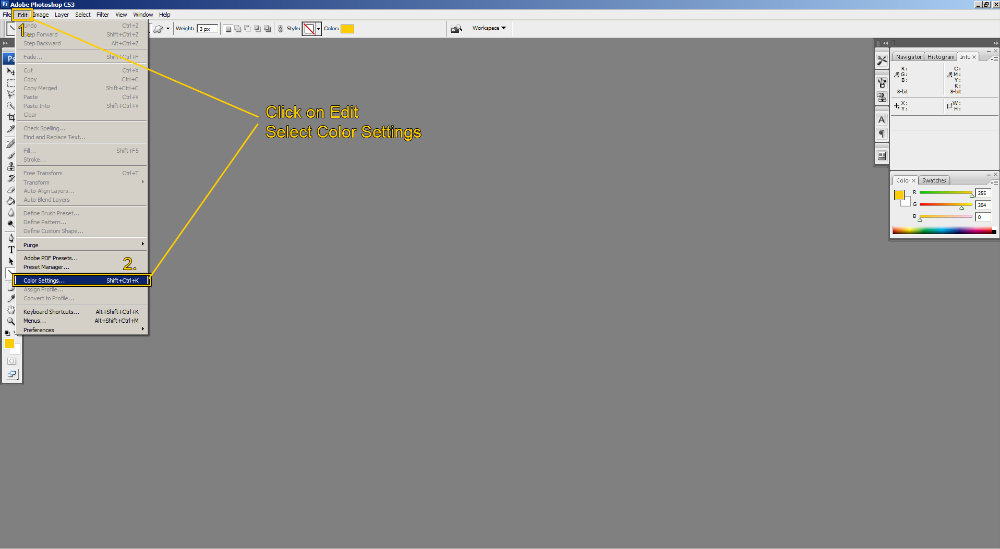
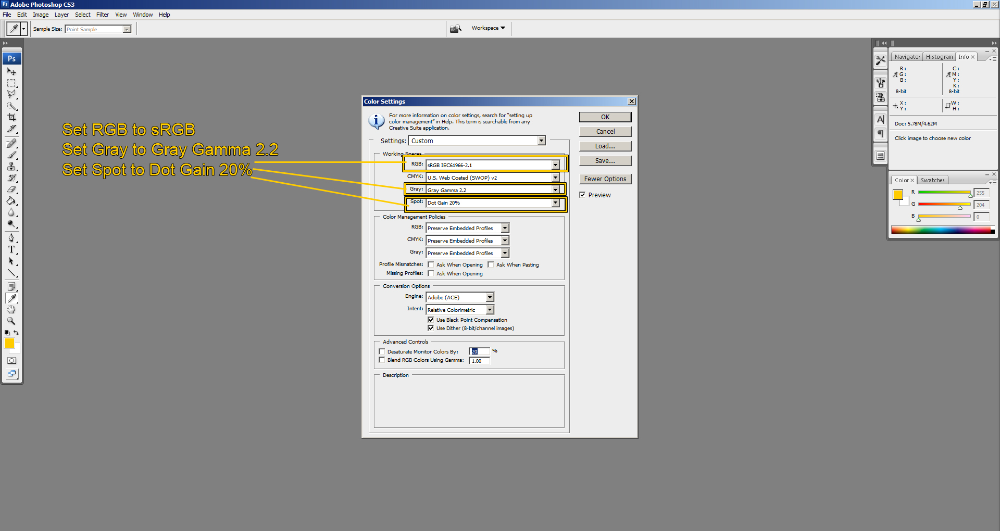
После настройки Photoshop мы можем получить правильные значения, взглянув на диаграмму и выбрав значения «цветом». Помните, что ваша карта глянца входит в альфу карты нормалей.
Вот значения для всех материалов. Чтобы получить значения «цвета», выберите образцы. Пожалуйста, нажмите на изображение, чтобы загрузить исходный файл .bmp (он несжат и дает истинные значения) и DO NOT выберите цвет из изображений здесь, в документе, поскольку это .jpeg, то есть он сжат и поэтому даст вам неправильные значения!
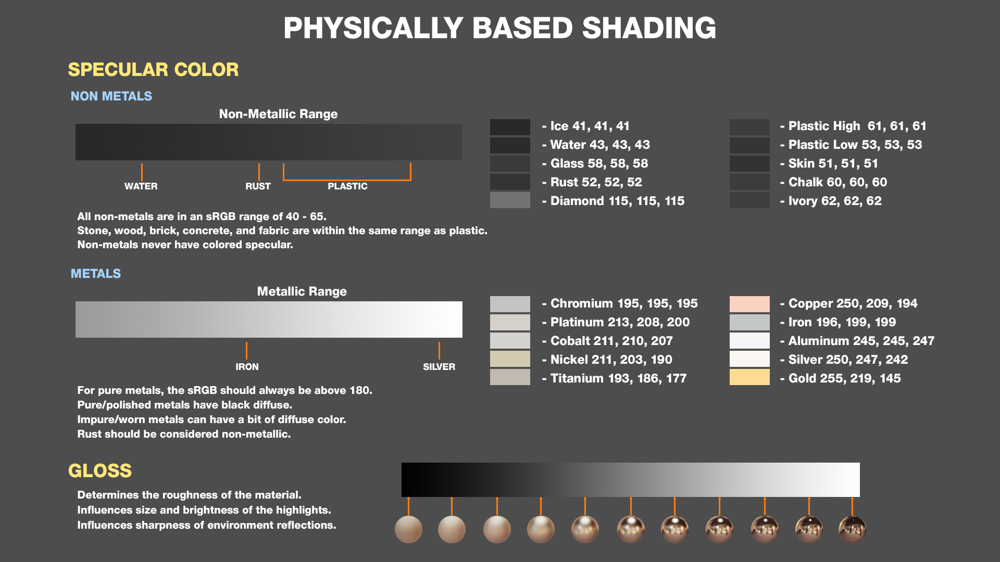
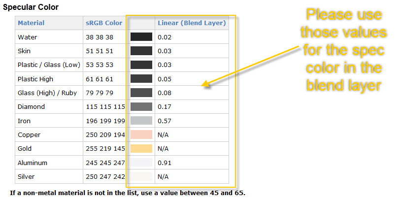
Если вы хотите больше узнать о физически основанных шейдерах и о том, как они работают, см.: Физически обоснованное затенение.
Зеркальное текстурирование для физических шейдеров
Поскольку мы используем физическое затенение для нашего проекта и действительно являемся «следующим поколением», карта блеска является одной из самых важных карт, если не самой важной. Это требует другого подхода к использованию наших зеркальных карт.
Карты блеска следует рассматривать как диффузную текстуру и настраивать в соответствии с ней, а в некоторых случаях раскрашивать так же. Если вы не используете металлы или в вашем активе нет металлических частей, мы вообще не используем карту спецификаций..
Все глянцевые карты попадают в альфа-канал карты нормалей.
Типы материалов
Есть только две категории веществ, которые подходят для рендеринга: металлы (проводники, такие как железо, золото, медь и т. д.) и неметаллы (диэлектрические материалы, такие как пластик, камень, дерево, кожа, стекло и т. д.). Оба имеют особые характеристики в отношении диффузного и зеркального отражения.
Металл поглощает весь свет, попадающий под поверхность; следовательно, металл не имеет диффузного отражения. Это означает, что металл должен иметь черный рассеянный цвет. Весь видимый свет отражается непосредственно от поверхности (зеркальное отражение). Различные типы металлов имеют характерные зеркальные цвета.
В отличие от металла неметалл имеет диффузное отражение; однако зеркальное отражение намного слабее и менее разнообразно, чем у металла. Зеркальное отражение неметалла монохроматическое (без цвета, только серый). Большинство неметаллов зеркально отражают лишь небольшую часть света – для большинства материалов от 2% до 5%.
Specular Color и что он делает с активом
Зеркальный цвет определяет, сколько света сразу отражается от поверхности, когда источник света находится непосредственно над поверхностью. Это минимальная интенсивность бликов, под углами скольжения она будет увеличиваться из-за эффекта Френеля. Поскольку зеркальный цвет специфичен для определенного типа материала, его также можно рассматривать как маску типа материала/вещества. Зеркальный цвет — это физическая величина, которую следует выбирать непосредственно из справочной таблицы. По сути, это не оставляет большой творческой свободы.
Большинство неметаллов отражают от 2% до 5% света как зеркальные, а блики монохромные/серые. Поскольку вариации очень малы, часто бывает достаточно использовать постоянный зеркальный цвет вместо карты зеркальной текстуры. Однако если металл и неметалл смешаны в одной текстуре, необходимо использовать карту отражений, поскольку металл имеет гораздо более яркий зеркальный цвет, чем неметалл. Если используется карта зеркального отражения, цвет зеркального отражения в редакторе материалов должен быть установлен на белый цвет, то есть 255/255/255, так как он умножается на значения из карты зеркального отражения и в противном случае приведет к снижению физических значений карты.
Если в текстуре не используется металл, ваша карта спецификаций должна быть белой, а значения зеркального цвета основаны на изображении «Физическое затенение». Вы можете получить его снова, нажав на эту ссылку.
Значения блеска и их влияние на актив
Еще одна важная вещь, о которой следует помнить, — это то, как работает блеск и как его следует использовать.
Блеск определяет шероховатость поверхности. А низкий Значение блеска означает, что поверхность грубый в то время как высокий значение означает, что поверхность очень гладкий и блестящий. Шероховатость влияет на размер и интенсивность зеркальных бликов. Чем более гладкая/блестящая поверхность, тем меньше будет зеркальный блик. Более узкая/меньшая подсветка будет в то же время ярче, чтобы подчиняться правилам сохранения энергии.
Большинство материалов должны иметь карту глянца, так как она может придавать затенению множество вариаций. Глянец тесно связан с картами нормалей, поскольку высокочастотные детали в нормалях также могут создавать ощущение шероховатости. Однако блеск — это скорее микрошероховатость материала.
Благодаря этому мы можем рисовать наши карты, определяющие, насколько часто использовались части объекта (поскольку сильно изношенные части объекта более гладкие, имеют более плотный блеск и большую отражательную способность, чем части, которые не использовались так часто).
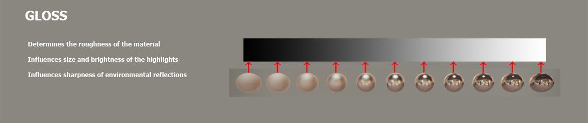
Основываясь на этих основах, нам нужно начать думать о том, как настроить нашу карту блеска. Это самый важный шаг в настройке карты блеска!
- Общее значение для неметаллов составляет от 53 до 61.
- Карта глянца всегда переходит в альфа-канал карты нормалей.
- Карта спецификаций не требуется, если у вас нет металлов или в вашем активе нет металлических деталей.
Как текстурировать для физического затенения
Наиболее важными картами для физического затенения являются карты блеска и карты нормалей. Вам следует начать текстурирование только с этих двух карт, которые помогут вам определить поверхность, а затем, в качестве последнего шага, добавить диффузную карту.
Сама диффузная текстура вообще не должна содержать никакой информации об освещении.
Экспорт вашей карты нормалей с картой глянца из Photoshop
Глянцевый и нормальный цвета как бы подходят друг другу. Карта нормалей определяет неровности поверхности в макромасштабе, а блеск — шероховатость в микромасштабе.
Эти две карты наиболее важны для затенения деталей, поэтому вам следует начать текстурировать с карты нормалей и карты блеска. Как только вы достигнете желаемого результата, вам следует начать работать над диффузной текстурой. Помните, что ваш диффузный свет вообще не должен иметь никакой информации об освещении.
Карта глянца всегда должна переходить в альфа-карту нормалей, даже если вы используете карту спецификаций для металлов и металлосодержащих поверхностей.
Чтобы экспортировать карту нормалей с блеском в альфа-канале, назовите ее и всегда добавляйте суффикс _ddna (в данном случае courtyard_wall_arch_marble_ddna).
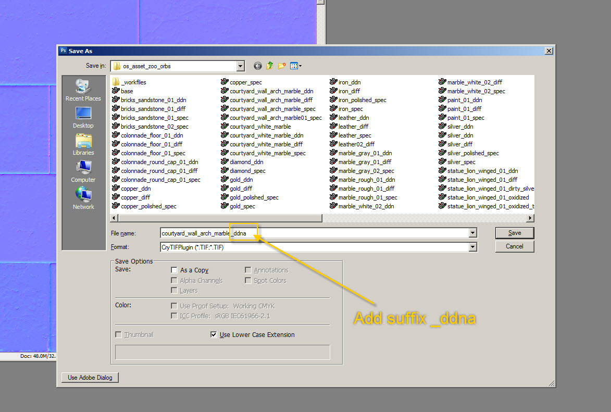
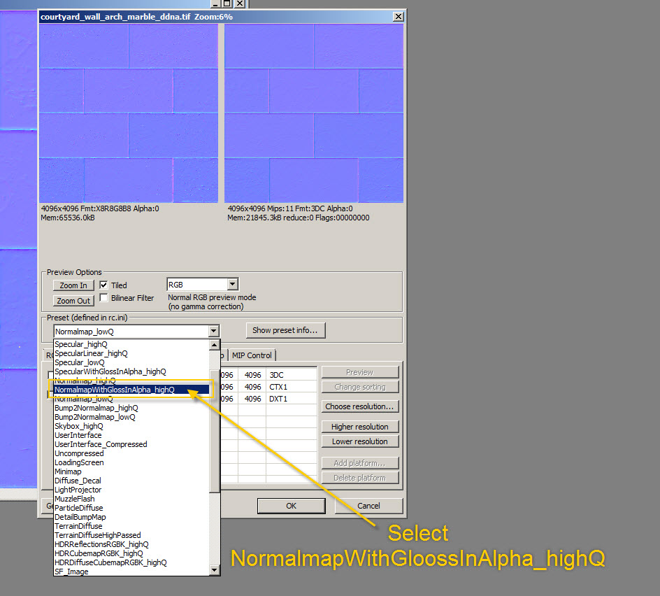
Примеры карт блеска и настройки шейдеров
Ниже приведены несколько примеров с пояснениями того, как карта блеска влияет на актив и как она определяет материал. Также объясняется и показано, как должна выглядеть карта глянца, чтобы добиться желаемого материала и внешнего вида.
Эти примеры размещены на Сферах в Зоопарке активов в качестве руководства. Над ними те же материалы без диффузии, поэтому нам лучше видно, что делает глянец и карта нормалей.
Материал пола из мраморной плитки
Как вы можете видеть, пол, выложенный мраморной плиткой, представляет собой очень гладкую поверхность с очень плотными характеристиками и высокой отражающей способностью. Некоторые секции не отражают свет, имеют широкие характеристики и поэтому выглядят не так гладко.
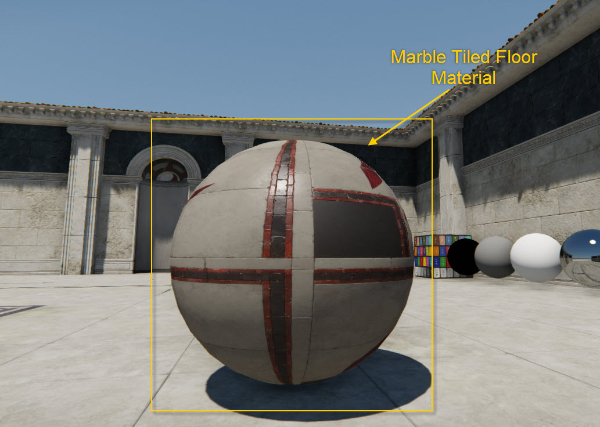
Большая темно-серая плитка имеет очень широкие характеристики, не такая гладкая и имеет очень низкую отражательную способность. Глядя на карту блеска, мы можем понять, почему. Как видите, большая часть карты очень светлая и яркая. Там, где находится плитка, вы видите, что она темно-серая. Именно по этой причине эта часть выглядит тускло по сравнению с остальными плитками. Пожалуйста, обратите также внимание на то, как мы определяем трещины и грязь, добавляя локальные более темные области. У нас также есть средний уровень контрастности. Все это помогает в сочетании с картой нормалей определить материал и сделать поверхность более интересной, а также сделать ее более правдоподобной.
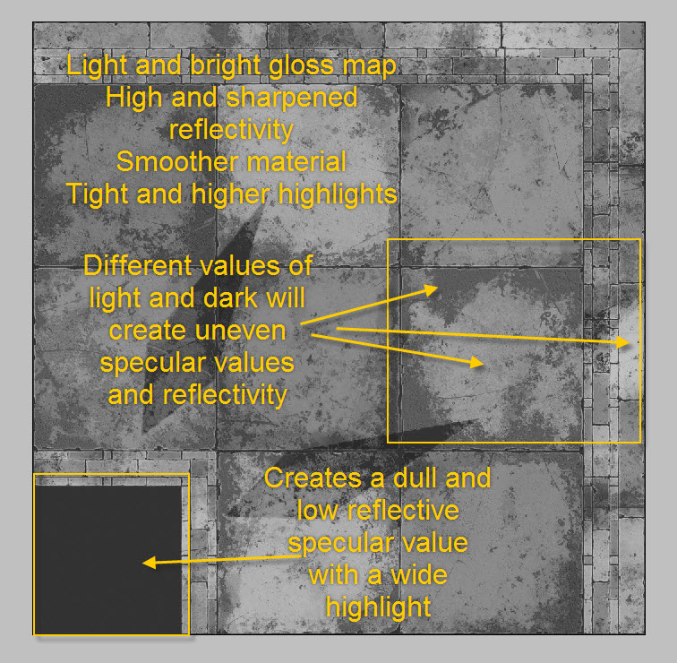
Чтобы правильно настроить наш шейдер, нам нужно установить в редакторе материалов Glossiness значение 255, иначе карта блеска не будет работать.
Что касается зеркального цвета, у вас есть некоторая творческая свобода в том, насколько высоко его следует установить и как добиться наилучшего вида актива. Для неметаллов значения должны быть между 53 и 61.
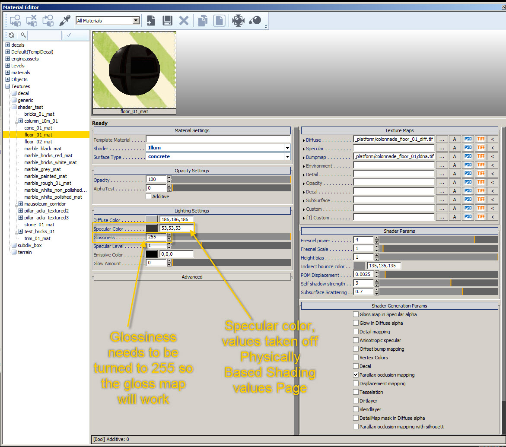
Каменный материал
Камень — это очень шероховатая поверхность с очень низкой отражательной способностью и очень широкими характеристиками.
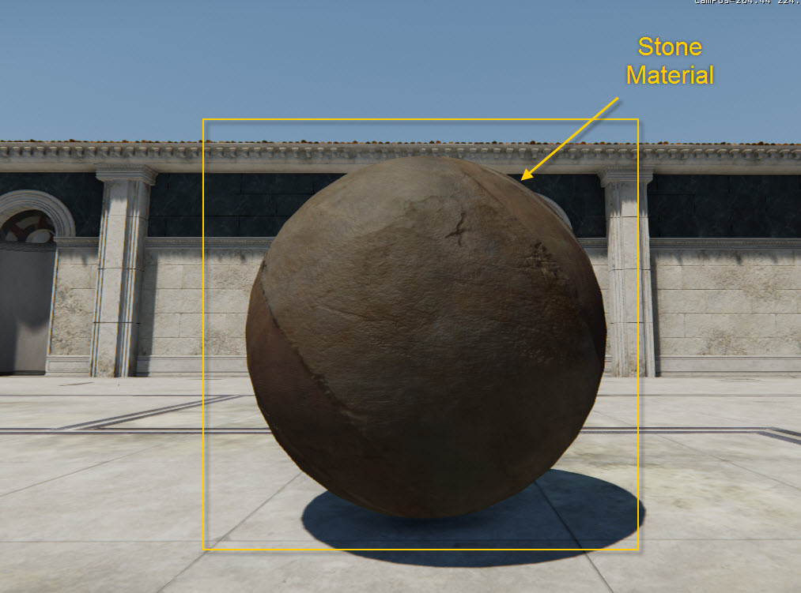
Если мы посмотрим на карту глянца, то увидим, что она довольно темная и приглушенная. Уровень контрастности не очень высокий. Все это создает очень низкую и нерезкую отражательную способность, с широким спектром и низкими бликами. Судя по всему, материал имеет высокую шероховатость.
Если вы внимательно посмотрите на карту блеска, вы также увидите, что она имеет неравномерность в светлых и темных областях. Это помогает сделать поверхность интересной, поскольку при прохождении света по ней создаются разные оттенки, что помогает сделать ее более правдоподобной.
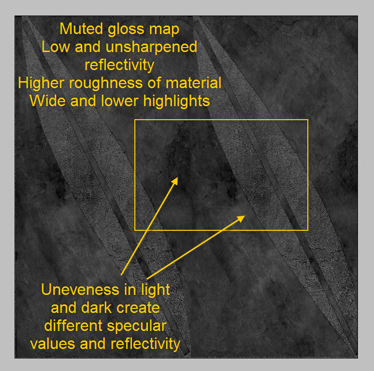
Чтобы правильно настроить наш шейдер, нам нужно в редакторе материалов установить Glossiness на 255, иначе карта блеска не будет работать.
Что касается зеркального цвета, у вас есть некоторая творческая свобода в том, насколько высоко его следует установить и как добиться наилучшего вида актива. Для неметаллов значения должны быть между 53 и 61.
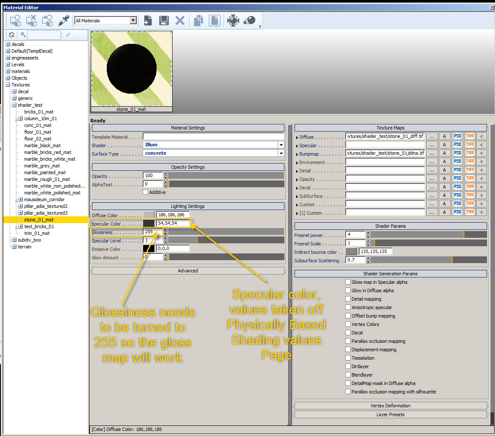
Материал кирпича из песчаника
Кирпичный материал из песчаника также представляет собой шероховатую поверхность с низкой отражательной способностью и широкими характеристиками. Хотя он не такой грубый, как камень.
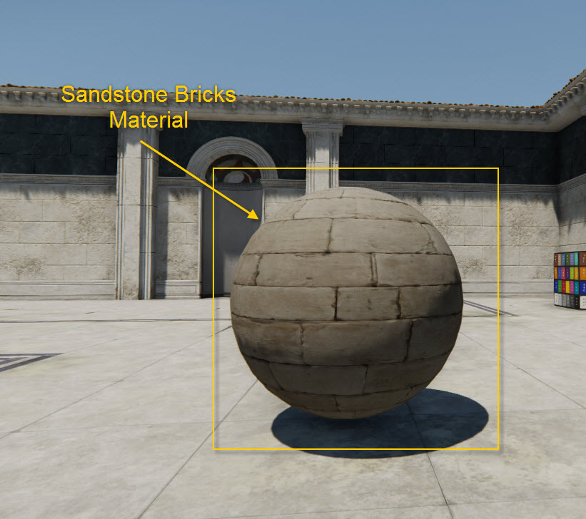
Взглянув на карту глянца, мы видим приглушенную карту с оттенками серого в диапазоне от среднего до темного. Он приглушенный, с невысоким уровнем контрастности и представляет собой низкую и нерезкую отражательную способность, с широким спектром. Но в отличие от камня он не такой темный и приглушенный.
Опять же, вы можете увидеть, как разные значения серого помогают сделать поверхность более интересной, поскольку при попадании на нее света возникают различия в зеркальности. Это делает наш материал более правдоподобным.
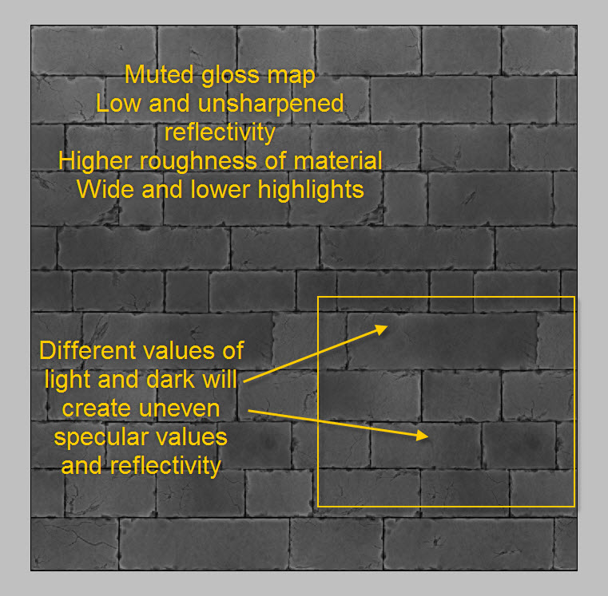
Чтобы правильно настроить наш шейдер, нам нужно установить в редакторе материалов Glossiness значение 255, иначе карта блеска не будет работать.
Что касается зеркального цвета, у вас есть некоторая творческая свобода в том, насколько высоко его следует установить и как добиться наилучшего вида актива. Для неметаллов значения должны быть между 53 и 61.
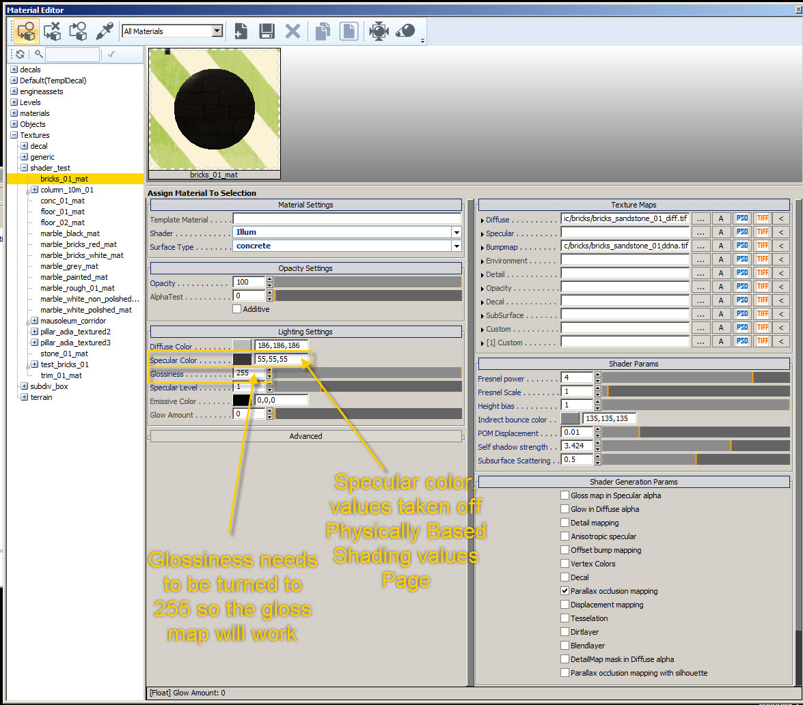
Окрашенный мраморный материал
Как видите, окрашенный мраморный материал представляет собой довольно гладкую поверхность с более жесткими характеристиками. Вы также можете увидеть, что части, где краска стерлась, стали более тусклыми, с более низкой отражательной способностью и меньшей резкостью и более широкими характеристиками. В нем также есть части, где все наоборот.
Обратите особое внимание на то, как краска на самом деле видна на поверхности (нарушая гладкость), где на нее падает свет.
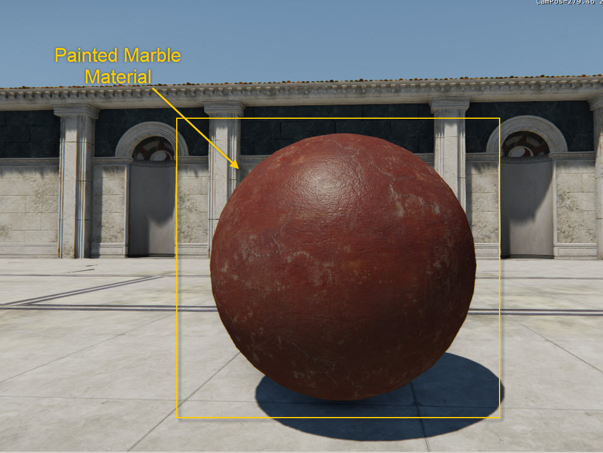
Общий фон этой карты светлый и яркий, с оттенками серого в среднем и высоком диапазоне. У нас средний уровень контрастности. Белые крапинки разрушат шероховатость поверхности и трещины. Изношенные и сколотые детали будут более грубыми и, следовательно, более темными. Таким образом мы достигаем того внешнего вида и правдоподобности, которые нам нужны.
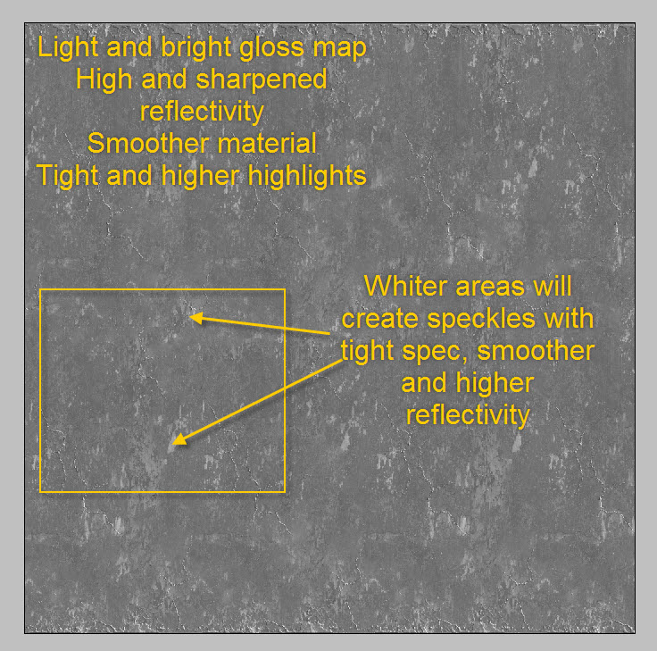
Чтобы правильно настроить наш шейдер, нам нужно установить в редакторе материалов Glossiness значение 255, иначе карта блеска не будет работать.
Что касается зеркального цвета, у вас есть некоторая творческая свобода в том, насколько высоко его следует установить и как добиться наилучшего вида актива. Для неметаллов значения должны быть между 53 и 61.
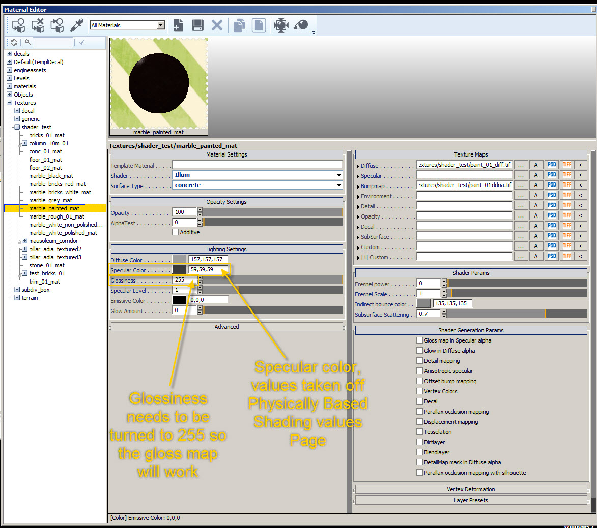
Мраморный неполированный материал
Неполированный мраморный материал представляет собой более шероховатую поверхность с низкой и необработанной отражательной способностью. Он также демонстрирует высокую шероховатость, с очень широкими и низкими бликами.
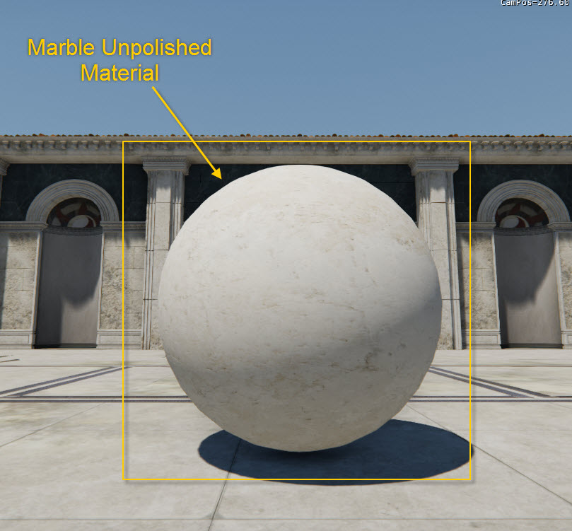
Если мы посмотрим на карту глянца, мы увидим темную и приглушенную карту, что приводит к низкому уровню контрастности. Это дает нам низкую и нерезкую отражательную способность, а также делает материал шероховатым. Это также делает спецификацию широкой с низкими бликами.
Различные значения темных и светлых оттенков на карте создают неравномерные значения зеркального отражения и отражательной способности, что делает поверхность правдоподобной и интересной.
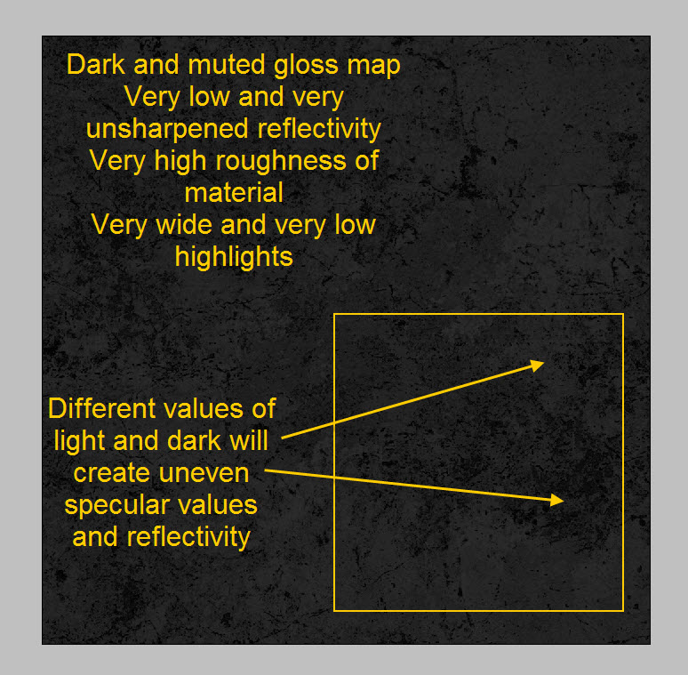
Чтобы правильно настроить наш шейдер, нам нужно установить в редакторе материалов Glossiness значение 255, иначе карта блеска не будет работать.
Что касается зеркального цвета, у вас есть некоторая творческая свобода в том, насколько высоко его следует установить и как добиться наилучшего вида актива. Для неметаллов значения должны быть между 53 и 61.
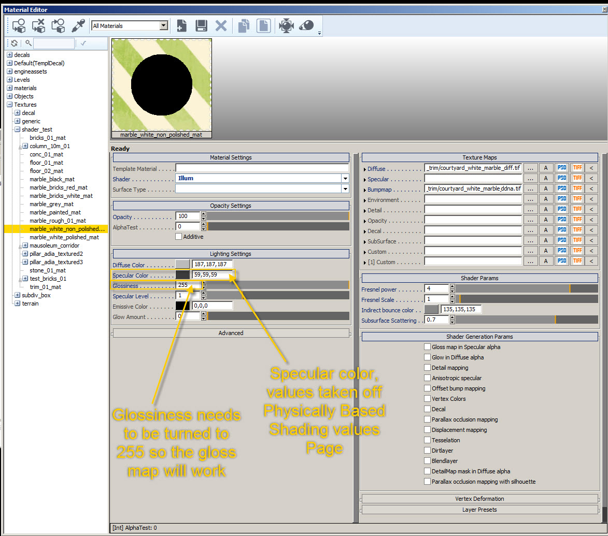
Белый/черный и серый полированный мраморный материал
В отличие от неполированного мрамора, мы имеем очень гладкую поверхность с высокой и резко заостренной отражательной способностью. Спецификация очень плотная, с яркими моментами.
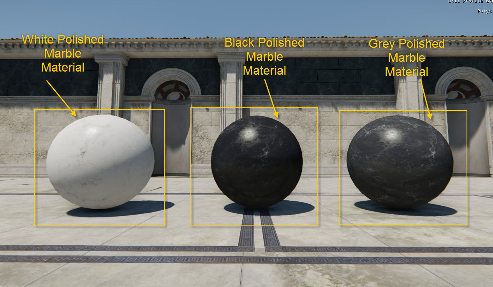
Чтобы добиться этого, нам нужно настроить нашу карту глянца очень светлой и яркой с некоторым контрастом.
Имея на карте разные значения света и тени, мы можем нарушить спецификацию, отражательную способность и резкость. Это помогает сделать поверхность более интересной и правдоподобной.
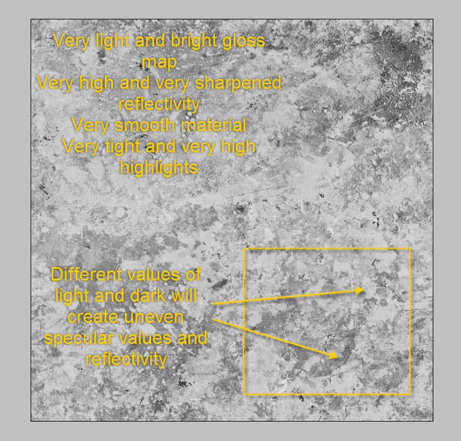
Чтобы правильно настроить наш шейдер, нам нужно в редакторе материалов установить Glossiness на 255, иначе карта блеска не будет работать.
Что касается зеркального цвета, у вас есть некоторая творческая свобода в том, насколько высоко его следует установить и как добиться наилучшего вида актива. Для неметаллов значения должны находиться в диапазоне от 53 до 61.
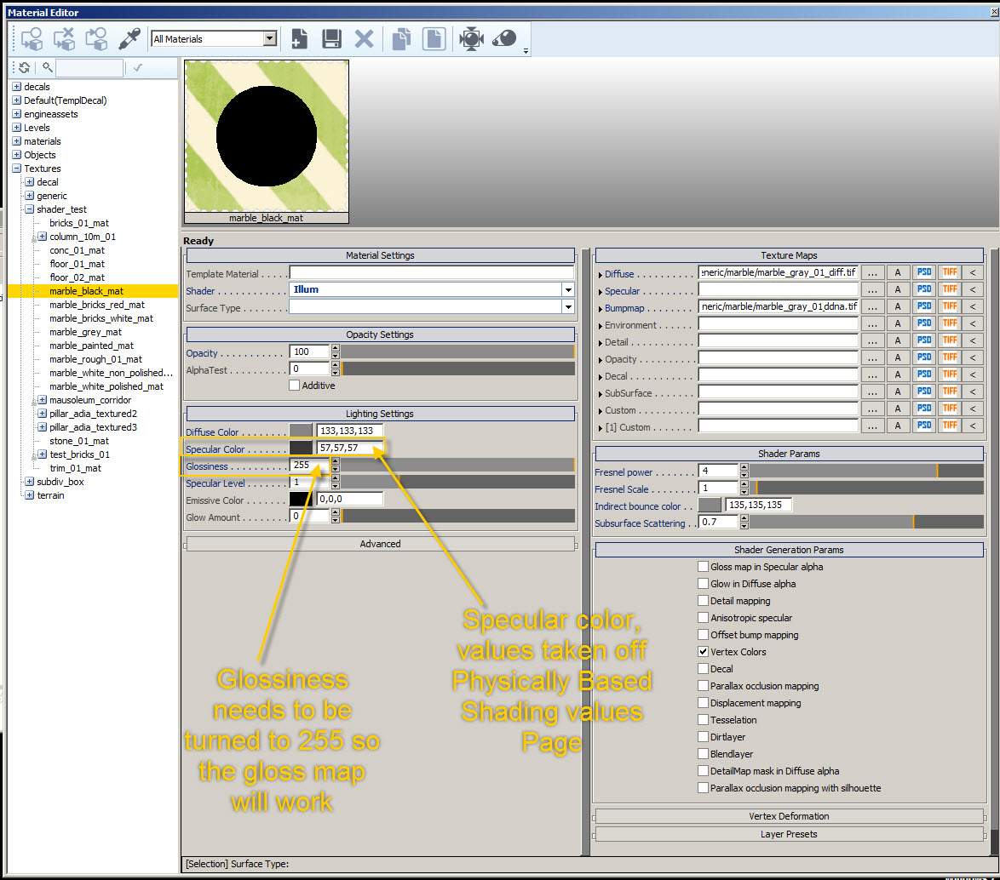
Материал полированного белого мраморного кирпича
Полированный белый мраморный кирпич имеет очень гладкую поверхность, но у нас есть щели, и в реальной жизни там скапливается грязь, что делает их менее отражающими.
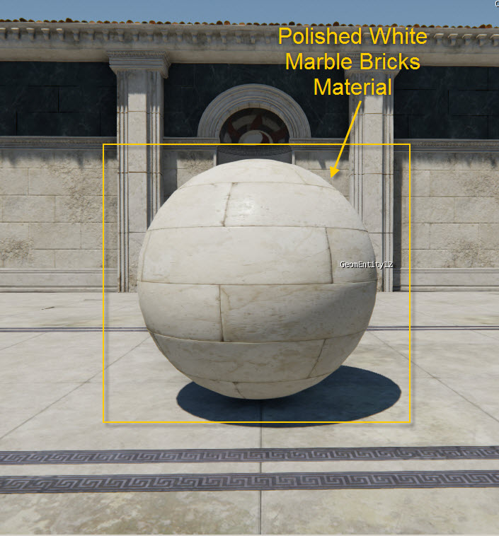
Глядя на карту глянца, мы видим очень светлую и яркую карту с более высоким контрастом. Это делает материал очень гладким, как полированный кирпич, но если посмотреть в сторону угла, мы увидим темные области, создающие менее полированные и менее отражающие части материала.
Различные значения темного и светлого делают материал более правдоподобным и интересным, поскольку они создают разные значения высоты, повышенной отражательной способности и гладкости.
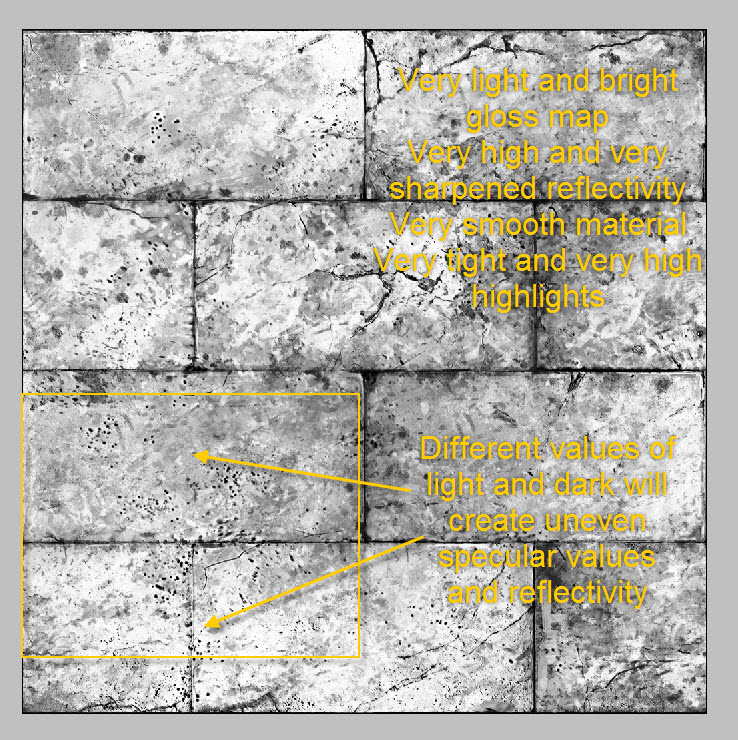
Чтобы правильно настроить наш шейдер, нам нужно установить в редакторе материалов Glossiness значение 255, иначе карта блеска не будет работать.
Что касается зеркального цвета, у вас есть некоторая творческая свобода в том, насколько высоко его следует установить и как добиться наилучшего вида актива. Для неметаллов значения должны быть между 53 и 61.
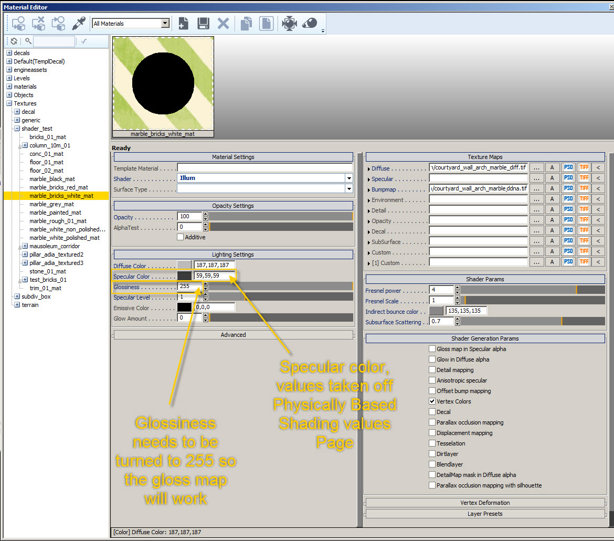
Неметаллический материал с металлическим материалом той же текстуры
Когда текстура содержит металлическую часть, нам нужно добавить цвет в карте спецификации к металлической части, поскольку металл будет иметь другой цвет спецификации, чем неметаллические части. Карта глянца в альфа-канале карты нормалей по-прежнему определяет плавность, отражательную способность и плотность бликов. Но мы не будем контролировать цвет спецификации в шейдере. Нам нужно сделать это в самой текстуре, для этого нам нужно взять значения из диаграммы физического затенения и добавить цвет в нашу карту спецификаций.
В этом случае мы используем специальную карту спецификаций, и наша карта блеска по-прежнему будет находиться в ALPHA CHANNEL карты нормалей!
У нас есть пример того, как будет выглядеть текстура карты спецификации. На карте цветов спецификации мы видим золотые детали желтого/золотистого цвета. Это делает зеркальный цвет, который отражается, желтым/золотистым, в данном случае это золото. Как вы можете видеть, остальная часть карты серого цвета со значениями 55,55 и 55 для неметаллических частей.
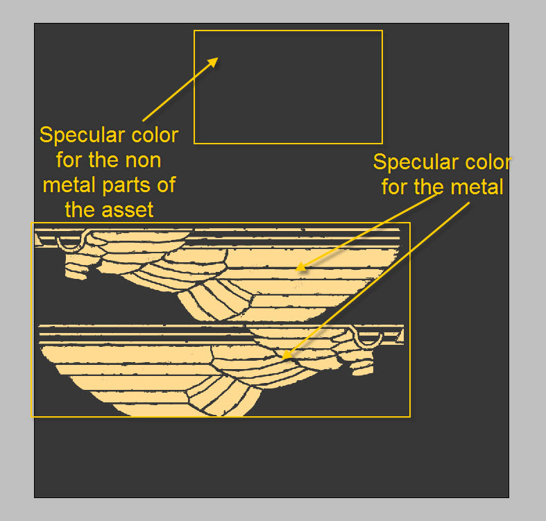
В альфа-канале карты нормалей у нас все еще есть карта глянца, которая будет определять нашу отражательную способность, гладкость и блики. Обратите особое внимание на то, насколько белыми и контрастными являются металлические детали.
Мы хотим, чтобы металл имел высокий уровень отражательной способности, гладкость и четкие блики, а также некоторые более темные части, чтобы разбавить изображение и сделать его более правдоподобным и интересным.
Пожалуйста, обратите внимание на остальную часть глянцевой карты. Мы видим, что поверхности определяются частями. Некоторые части объекта грубые, с низкими бликами, широким спектром и низкой отражающей способностью.
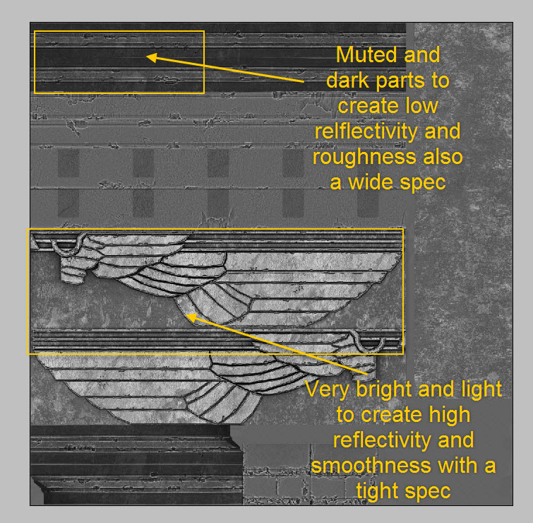
Как только актив окажется в движке, нам нужно открыть редактор материалов и установить значение зеркального отражения материала на 255. Это необходимо сделать, поскольку цветовая карта карты спецификации управляет зеркальным цветом, а не шейдером.
Пожалуйста, не забудьте также установить значение блеска на 255, чтобы карта блеска в альфа-канале работала.
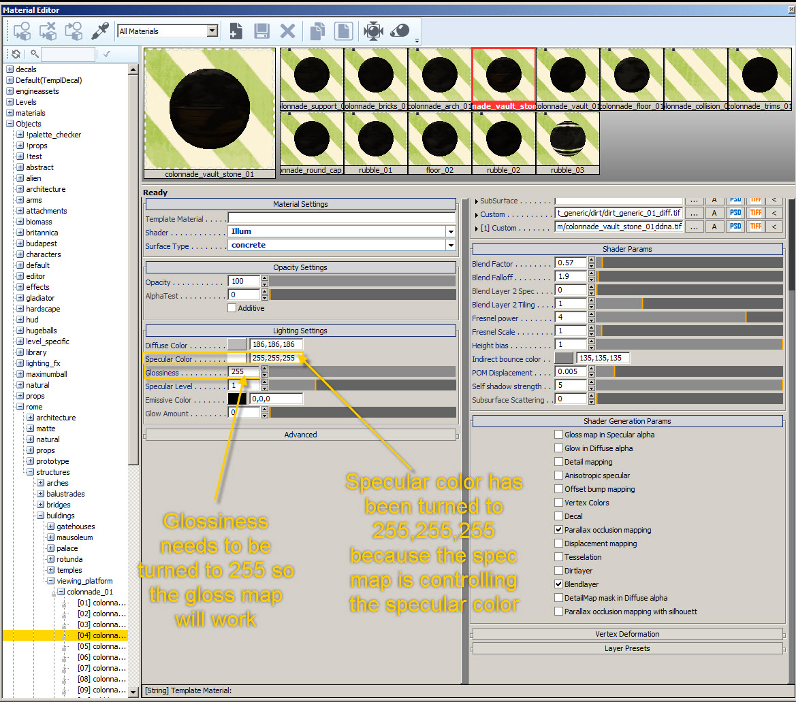
В конечном итоге наш актив будет выглядеть в игре вот так.
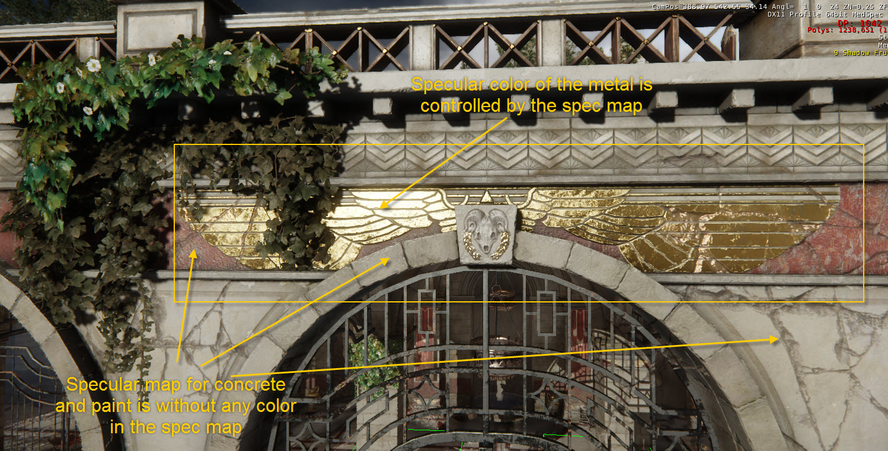
Металлы
Когда ассет состоит исключительно из металла, нам вообще не нужна диффузная текстура. Металлы не имеют цвета и определяются цветом света, который они отражают. Поэтому мы используем нашу спецификацию и отбираем цвет металла в соответствии с ней.
Карта глянца в альфа-канале карты нормалей по-прежнему определяет плавность, отражательную способность и плотность бликов. Но мы не будем контролировать цвет спецификации в шейдере.
Мы должны сделать это в самой текстуре. Для этого нам нужно взять значения из диаграммы физического затенения и добавить цвет в нашу карту спецификаций.
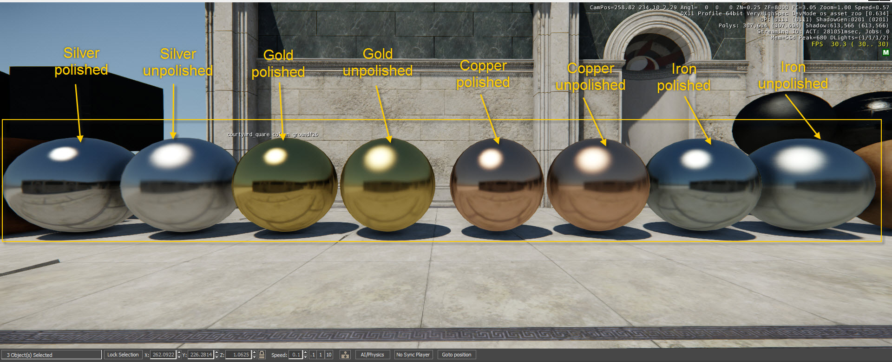
В этом случае мы используем специальную карту спецификаций, и наша карта блеска по-прежнему будет находиться в ALPHA CHANNEL карты нормалей!
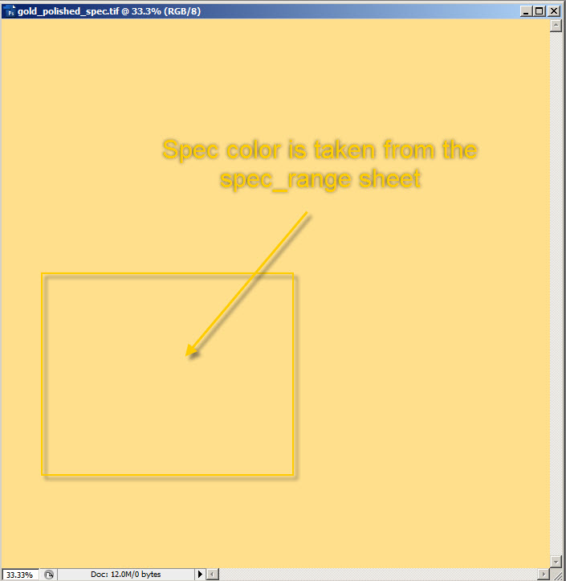
В альфа-канале карты нормалей у нас все еще есть карта глянца, которая будет определять нашу отражательную способность, гладкость и блики.
Обратите особое внимание на то, насколько белыми и контрастными являются металлические детали. Есть два примера карты блеска. У нас есть неполированный металл с более широкими характеристиками и более низкой отражательной способностью, а также полированный металл с более белым блеском, который дает нам жесткие характеристики и высокую отражательную способность.
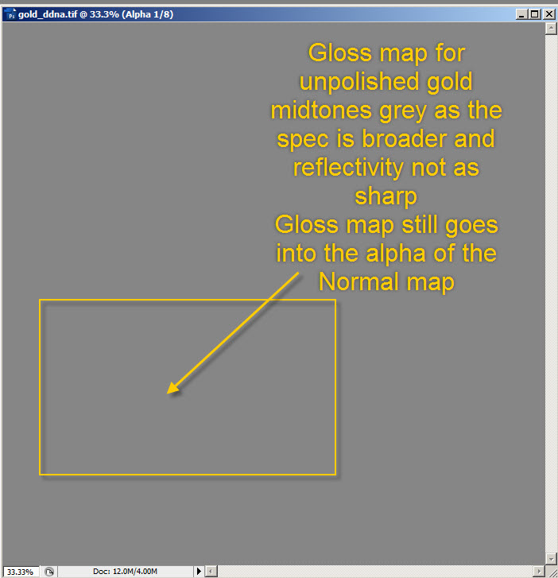
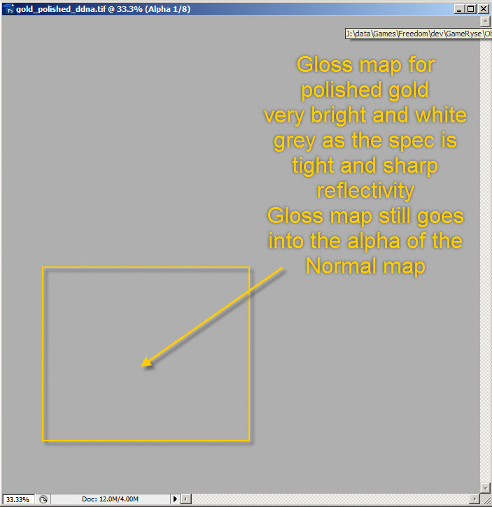
Как только актив окажется в движке, нам нужно открыть редактор материалов и установить значение зеркального отражения материала на 255. Это необходимо сделать, поскольку цветовая карта карты спецификации управляет зеркальным цветом, а не шейдером.
Пожалуйста, не забудьте также установить значение блеска на 255, чтобы карта блеска в альфа-канале работала.
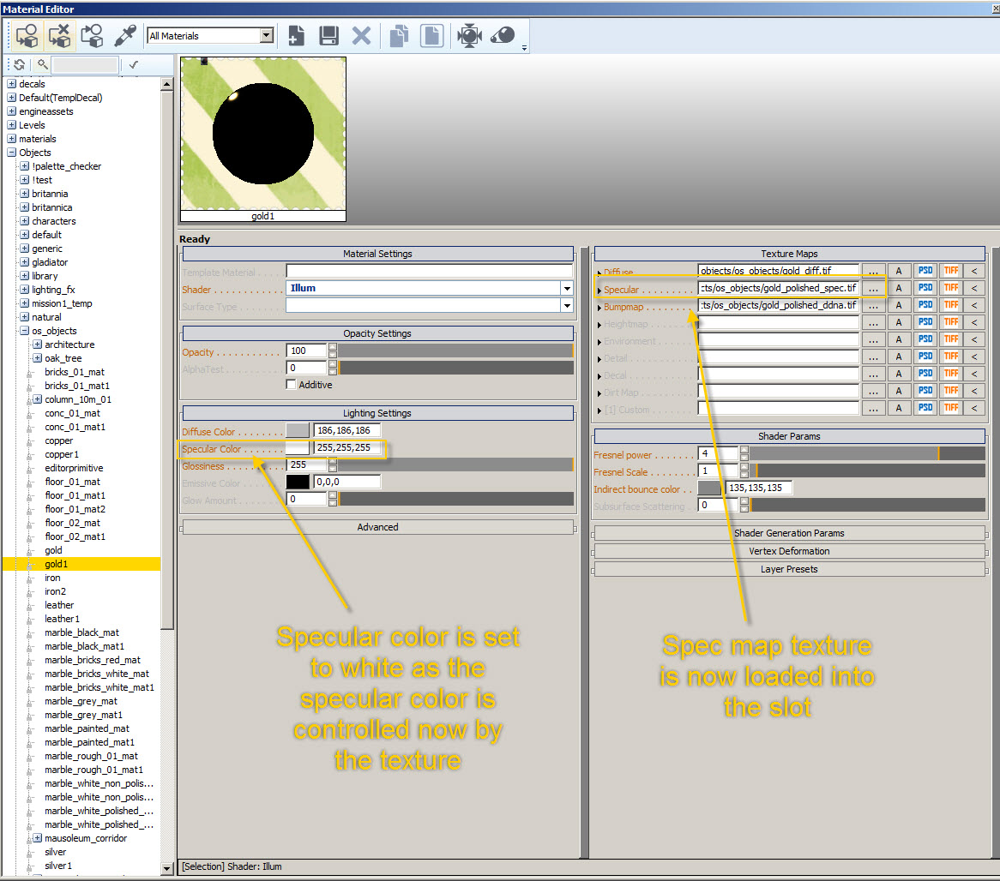
Окисленные/ржавые металлы
Большинство металлов, с которыми вы встретитесь в реальном мире и в нашей игре, будут использованными, изношенными и даже окисленными. Нам по-прежнему вообще не нужна диффузная текстура. Металлы не имеют цвета и определяются цветом света, который они отражают. Поэтому мы используем нашу спецификацию и отбираем цвет металла в соответствии с ней. Карта глянца в альфа-канале карты нормалей по-прежнему определяет плавность, отражательную способность и плотность бликов. Нам нужно начать с этого и по-настоящему нарисовать места, где естественным образом может образоваться окисление. Мы хотим, чтобы в этих областях было меньше глянца и меньше отражательной способности.
Если вы посмотрите на ржавчину в целом, то увидите, что сквозь нее все еще проступает какое-то мерцание. Пожалуйста, подумайте об этом, посмотрите на ссылку и включите ее в свою глянцевую карту. Как уже упоминалось раньше, с металлами мы не будем контролировать цвет спецификации в шейдере. Мы должны сделать это в самой текстуре. Для этого нам нужно взять значения из диаграммы физического затенения и добавить цвет в нашу карту спецификаций. Нам нужно взглянуть на нашу карту спецификаций и соответствующим образом текстурировать ее. Начинаем покраску с основного цвета металла, взятого из листа спектров, и красим в цвет ржавчины или окисления в соответствии с нашей картой блеска.
В альфа-канале карты нормалей у нас все еще есть карта глянца, которая будет определять нашу отражательную способность, гладкость и блики.
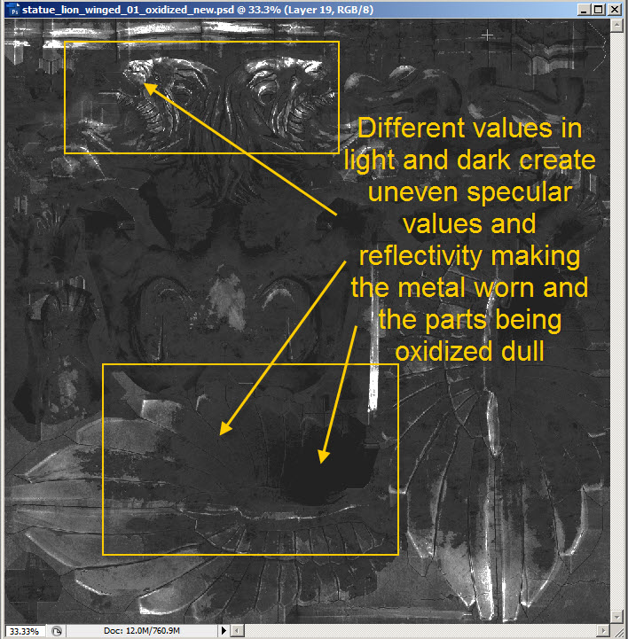
После того, как мы закончили с нашей картой блеска, мы рисуем в соответствии с нашей картой блеска и нашей картой спецификаций, чтобы получить разные зеркальные цвета окисления.
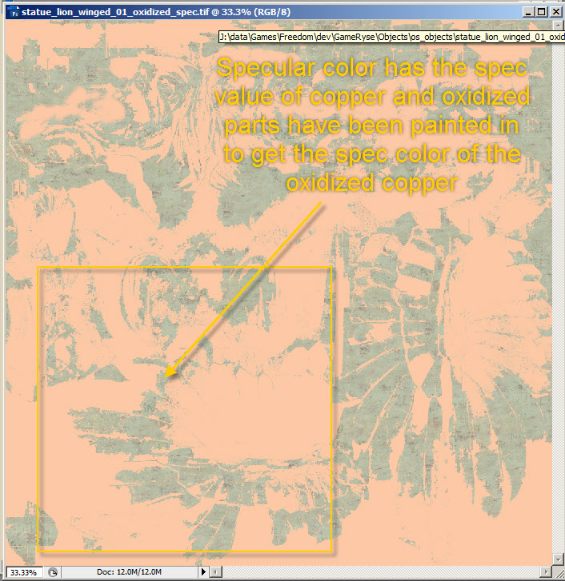
Как только актив окажется в движке, нам нужно открыть редактор материалов и установить значение зеркального отражения материала на 255. Это необходимо сделать, поскольку цветовая карта карты спецификации управляет зеркальным цветом, а не шейдером.
Пожалуйста, не забудьте также установить значение блеска на 255, чтобы карта блеска в альфа-канале работала.
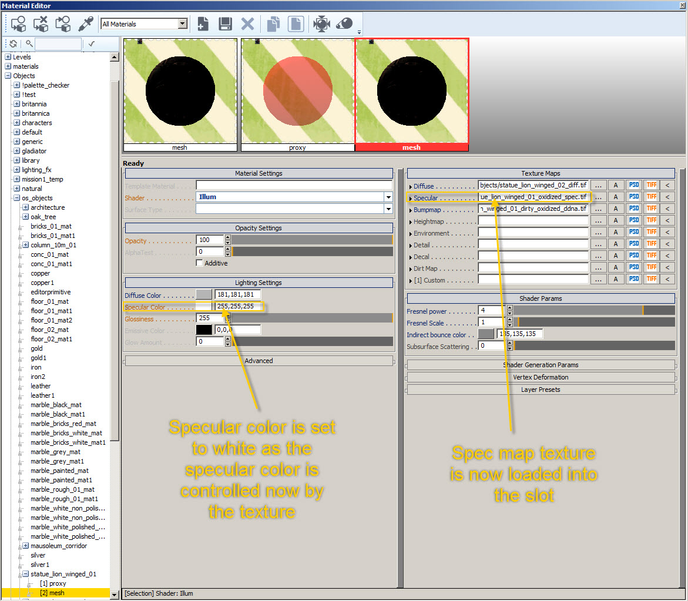
Вот наш окончательный вид ассета в игре с работающими картами нормалей, блеска и спецификаций.
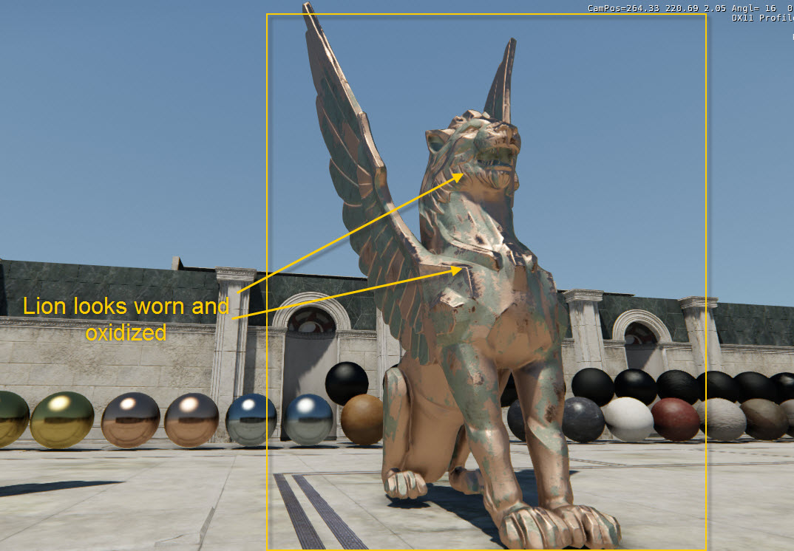
Подповерхностное рассеяние в окружающей среде
Одна из важнейших вещей, позволяющих вывести наше визуальное качество на поистине «новое поколение», — это использование подповерхностного рассеяния в окружающей среде и материалов для него.
У вас есть материалы, которые имеют большее количество подповерхностного рассеяния, например мрамор, и есть материалы, у которых их меньше или нет вообще. Поскольку стоимость его использования очень низкая, мы рекомендуем использовать его часто. Единственный раз, когда его не следует использовать, — это чистые металлические поверхности. Иногда поверхность не имеет большого подповерхностного рассеяния, но мы все равно рекомендуем использовать ее с очень низким значением.
Мы можем использовать три цвета подповерхностного рассеяния: красный, синий и желтый. Красный цвет подповерхностного рассеяния следует чаще использовать в сочетании с кожей персонажей. Синий следует больше использовать со льдом, но его также можно использовать с поверхностями, чтобы придать ему более холодный вид. Желтый — основной цвет, его следует использовать для окружающей среды и ее поверхностей, особенно на мраморе.
Чтобы лучше показать разницу, привожу два скриншота мраморного столба: первый без подповерхностного рассеяния, второй с.
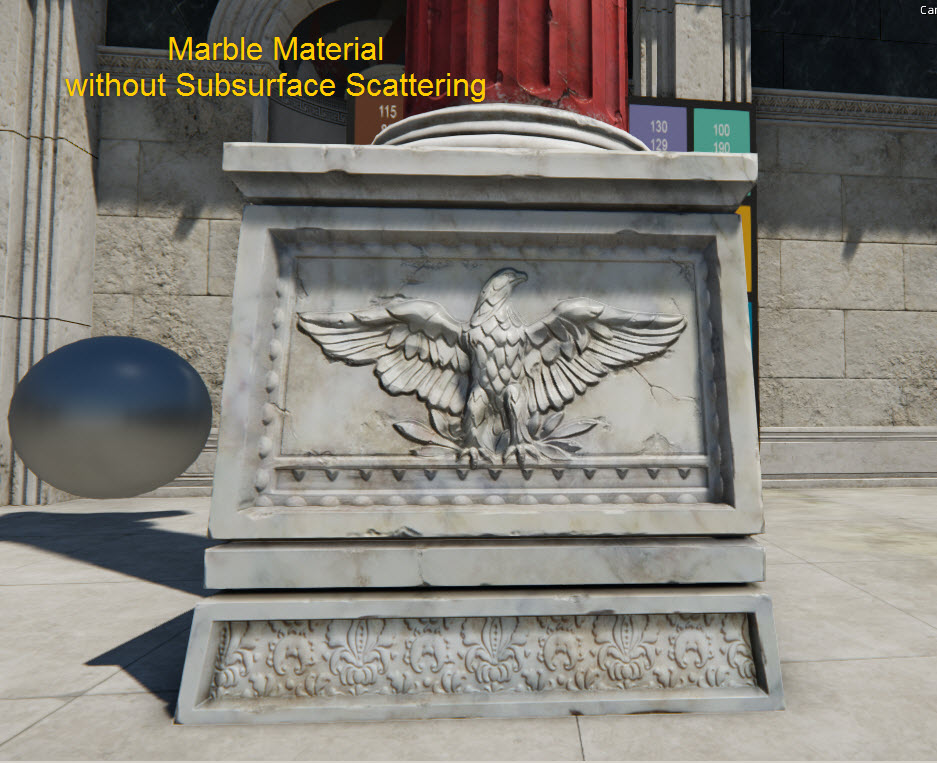
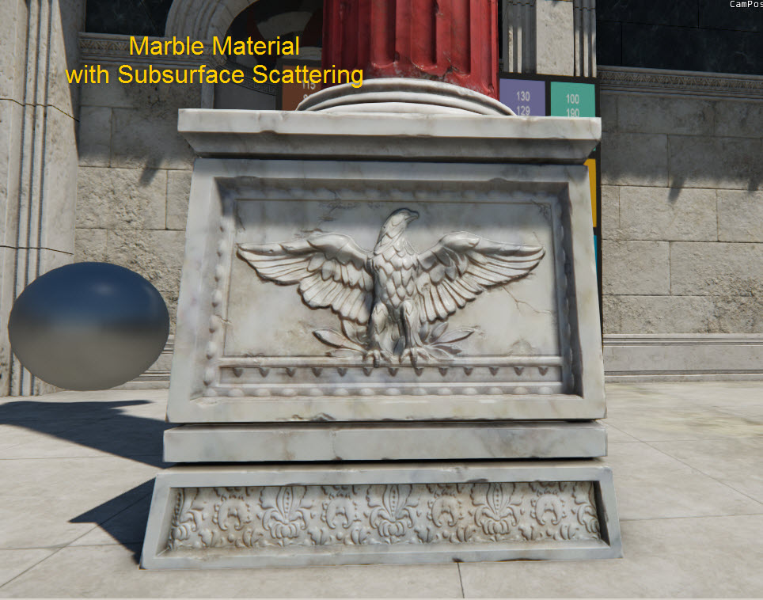
Чтобы установить величину подповерхностного рассеяния, перейдите на вкладку и установите значение, которое выглядит хорошо. Пожалуйста, будьте осторожны и не устанавливайте его слишком высоко, так как он будет выглядеть как воск. Рекомендуется повышаться с шагом 0,05. У нас здесь есть некоторая степень творческой свободы.
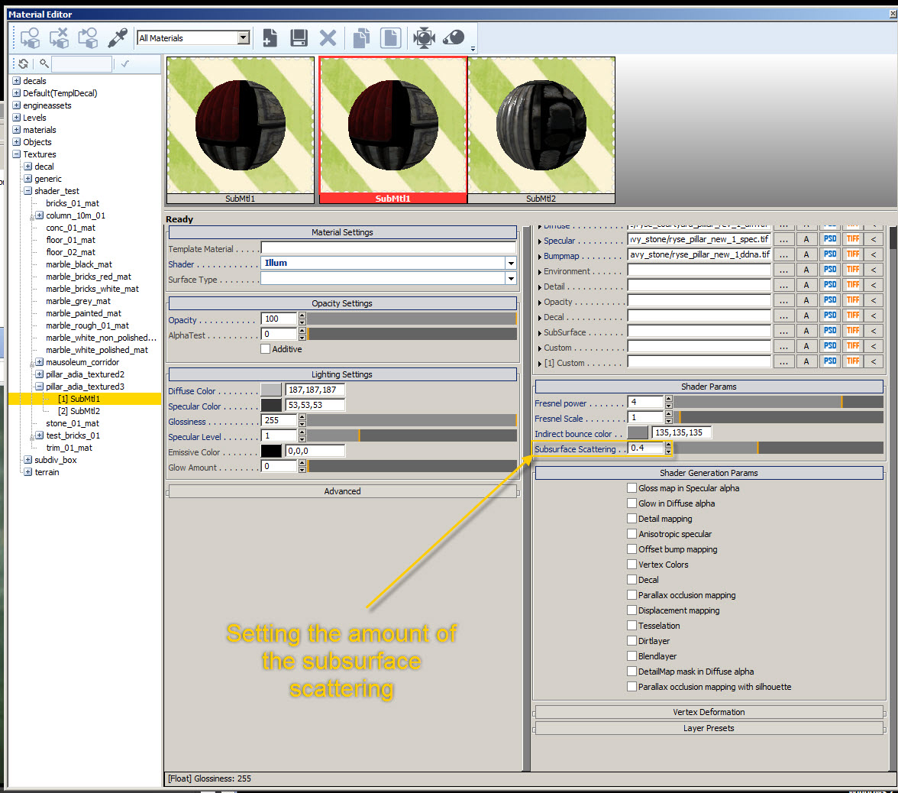